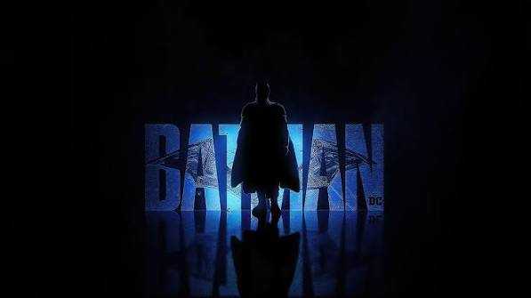
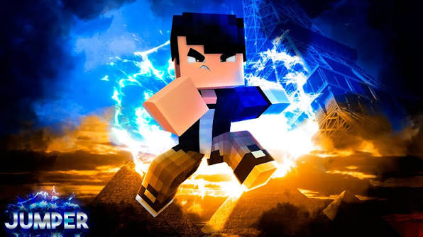
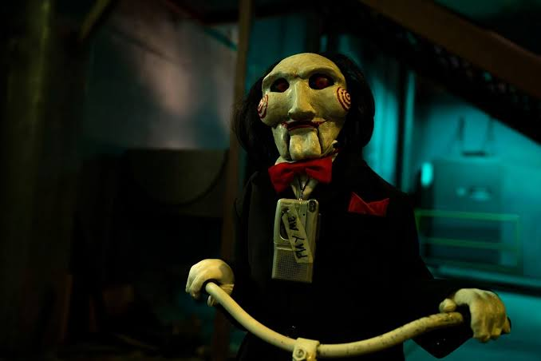

GRANDES FILMES, GRANDES MOMENTOS
O cinema que
te leva mais longe.
Viva histórias incríveis na melhor experiência cinematográfica do Brasil.
▷ VER FILMESESCOLHA SUA CIDADE
Onde você quer assistir?
EM CARTAZ
Os filmes mais esperados


